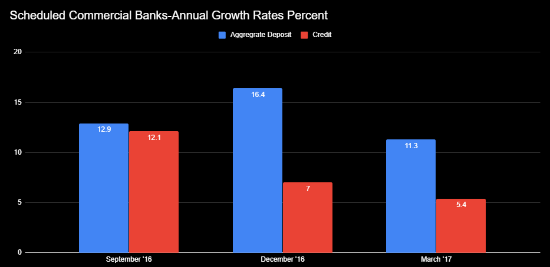

Introduction
Currency or Legal Tender
A currency or legal tender in monetary economics is any medium of exchange. Bank notes (dollars), metal coins (quarters), and/or bitcoin(cryptocurrency) are all legal tenders we exchange them for other goods and services amongst others. We use currency or legal tender to pay our bills, to buy gifts, to pay for gas etc. The concept of currency in circulation, is all the cash that is in the hands of individuals, groups, and businesses to carry out day to day activities. India, a country in Asia has one of the highest levels of currencies in circulation at 12% of the GDP. It will not be incorrect to infer that people of India like to carry out their daily transactions using cash. The amount of cash in circulation is influenced by the need or demand. Some might argue that easy availability of cash in hand leads to more corruption and the instance of reverse causality where the prevalence of corruption in any organization, group, government, or country leads to more cash being released.
1
Image source: Flickr.comThe Policy of Demonitization.
The Policy of Demonetization is a process by which currency notes are not considered as a legal tender. With no advance warning, The Indian Government under the leadership of Prime Minister Modi discontinued 86% of cash from circulation, currency notes of the valuation 500 ($7.09) and 1000 (14.18) rupee notes. To emphasize the impact that accounts for 86 percent of total cash in circulation. On the night of November 6, 2016 at 8:15 pm Prime Minister Modi made the surprise announcement in an unscheduled broadcast event that the policy of demonetization will implement effective midnight on the same day with the intention to curtail corruption and counterfeit currency. People could deposit their 500 and 1000 rupee notes in the bank but could no longer use them for they day to day transactions. For a country that is heavily cash dependent meant that a lot of small and immediate businesses were immediately affected.
Impact on Banks
190 million Indian citizens did not have bank accounts when the policy was implemented which meant in order for these 190 million citizens to deposit or exchange their old currency notes with the new ones, they had to open up a new bank account. The Banking sector stood to benefit from the implementation of this policy, we would ideally see a rise in the number of deposits made right after the implementation of the policy. By evaluating the quarterly reports generated by the Reserve Bank of India which is the Central Bank of India incharge of currency regulation we see that the Aggregrate deposits went up from 12.9% to 16.4%. The goverment had set a limit on deposit amounts. 
Growth in Bank Deposits
The new currency notes were not available in the same quantities as the old notes and there was a limit on how much one could withdraw at one time. If we look at the ATM transactions
for the months from October to December of 2016, we can see a steady decline.
1
Image created by Neha. Data source: RBI
ATM transactions in Millions of Rupees, Oct-Dec 2016
This led to a set of problems that the local governments were not equipped to deal with. This is also one of the reason why the implementation of this Policy
was so heavily critized. The daily withdrawal and deposit limit gave rise to its own set of problems
1
Image created by Neha. Data source: RBI- Long lines outside Banks and ATMs, people were waiting for more than 8-16 hours in line
- Large number of instances were reported where people had either passed out or fainted while waiting in queue
- Lack of administrative and manpower support for the Banks and the local police.
Queue to withdraw money from ATM
1
Image source: DNA IndiaImpact on Gross Domestic Product
Gross Domestic Product or GDP is the monetary value of all final goods and services, which is often measured annually. It is an indicator of economic activity, the higher the number the healthier the economy. Indian economy under the new government was doing well and had a healthy growth rate up until the policy of Demonization was announced post which the Gross Domestic Product fell by 2 percentage points in the last quarter of 2016. The World Bank maintains the records of all countries GDP and the graph below highlights the steady fall in India's economy.
India currently has 7.6 million active users on Twitter, the focus of this study will only be on tweets published in the English language. India has 22 official language translating them in the truest form is beyond the scope of this project.
Twitter Data
A Twitter developer account and a registered application is required in order to get data from Twitter. Using python and related libraries like Tweepy make it easier to fetch and store data. In order to fetch data we need to specify our keywords, in our case political parties like the Bharatiya Janata Party (BJP) and/or Indian National Congress (INC) and number of tweets we want either by that user or a tweet mentioning that user. A sample code provided below does the job well
# The Name of the political party or the Twitter user we want to fetch tweets from
name = "BJP"
# Number of tweets we want to GET per request. Twitter has POST, and GET limitations and you can read about it in the HELP page.
tweetCount = 100
# Calling the user_timeline function with our parameters
results = api.user_timeline(id=name, count=tweetCount)
# foreach through all tweets pulled
for tweet in results:
# printing the text stored inside the tweet object
print(tweet.text)
One of the advantages of this data is that the tweets are collected in a streaming fashion thus representing a true sample of actual tweets. It is important to see if any of the political parties and/or people associated with promoting the political parties are talking about the Policy of Demonetization. The tweets might show us people who are still for/against the policy or if there are for/against the government who implemented the policy. Tweets were collected over a period of 2 months of February and March. People were talking about the policy of demonetization, although when we carried out sentiment analysis on the data largely people felt neutral about the policy i.e. the tweets did not indicate a strong positive or negative emotion associated with the policy. Mentioned below if the word cloud using python for the 3 major political parties in India.
- Bharatiya Janata Party (BJP)
- Indian National Congress (INC)
- Aam Aadmi Party (AAP)
Most common words found in Tweets of Political parties.
1
Image created by Neha.Sentiment Analysis
Sentiment Analysis or Sentiment classification is a way to identify which of the tweets contain positive, negative, neutral connotations. Natural Language Toolkit contains various lexical databases and resources that simplifies complex classifications tasks to work with human language data. The Liu and Hu model provides the basic categorization based on the number of tweets and showcases which polarity is being more represented. Words that do not appear in the lexicon appear as neutral. Tweet data from all the three political parties where they are talking about the policy of demonetization were classified into positive, negative, and neutral.Please note: footnotes not visible on mobile.
Return to Student Webpage